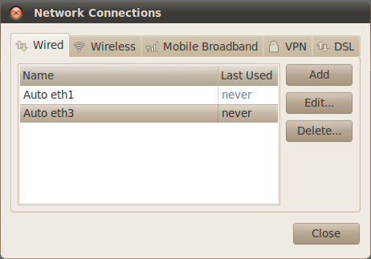
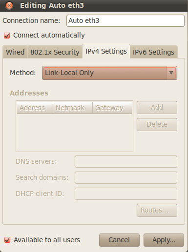

Sourcery Probe Personal Settings (ARM and MIPS Only)
Sourcery Probe Personal models for ARM and MIPS use TCP/IP sockets over USB for communicating with the debugger. This requires compatible IP addresses on the probe and PC. By default, the USB probe automatically uses an IP address in the Local Link range 169.254.x.x.
| Note |
|
Sourcery Probe Personal models for PowerPC do not require any communication settings because a dedicated USB driver is used.
|
| |
In most cases it is best to leave the probe set to use Local Link mode so that it can pick an IP address for itself.
- If you are using Windows 7, then local link mode is fully supported, and no special configuration is required.
- If you are using Windows XP or Linux, then you will need to assign a static IP address to the PC network adapter. Refer to “Connecting to the Target and Host Computer” in the Mentor Embedded Sourcery Probe Personal Hardware Manual for this procedure.
Although no special probe settings are normally required, in some cases you might want to set the probe to a static IP address in a different address range. There are two ways to do this:
- Use the Sourcery Probe Console to configure the settings. This is the best method if you cannot establish a network connection to the probe. See “Sourcery Probe Console” in the Mentor Embedded Sourcery Probe Personal Hardware Manual for details on this procedure.
Changing the Settings Using CodeBench
Prerequisites
- You must be using an ARM or MIPS model of Sourcery Probe Personal.
| Caution |
|
New static IP settings can result in the probe becoming inaccessible if the settings are incorrect or incompatible with the network adapter on your PC. If the probe is inaccessible after programming new settings, you must change your network adapter settings to match the IP range used by the probe.
|
| |
Procedure
- Start Sourcery CodeBench per the instructions in the Sourcery CodeBench user manual. Close the Welcome screen if it appears.
- Select Run > Sourcery Probe > Settings and Firmware Update.
The Settings and Firmware Update Dialog Box appears.
- Enter the IP address or hostname in the Probe IP/Hostname field for the probe, and click Retrieve Settings.
Tip: If you do not know the IP address or hostname of your probe, click Discover to view a list of all Sourcery Probe devices currently available on the local subnet.
This opens the Sourcery Probe Discovery Dialog Box and scans all available network adapters for Sourcery Probes. Note that not all Sourcery Probe devices can be discovered by this dialog box.
- The Settings and Firmware Update dialog box displays the current settings for the selected probe device.
- Choose one of the following options on the Settings tab:
NOTE: If you need to use multiple Sourcery Probe Personal probes on the same host, please contact Mentor Graphics for help with your setup.
- Select Use DHCP/Local Link for the probe to obtain the IP address configuration automatically from the DHCP server on the network. This is the default configuration.
- Select Static IP to use the static IP address configuration.
This requires you to enter the IP address and subnet mask. Since this is a private network to your PC, you can choose the IP address setup that makes sense for your environment. Be careful not to collide with existing network adapter settings on your host computer. We suggest using something in the range of 192.168.X.X with a subnet mask of 255.255.255.0.
- After you make the necessary changes to the settings, click Program Settings to set them on the device and reboot it.
Related Topics
Settings and Firmware Update Dialog Box
Sourcery Probe Discovery Dialog Box
Updating the Sourcery Probe Firmware Using CodeBench
Configuring a Sourcery Probe Network Interface for Local Link Addressing
The Linux service "Network Manager" is responsible for automatically configuring host network interfaces. The steps in this section describe how to recognize and configure a Sourcery Probe network interface for Local Link addressing.
| Note |
|
The screenshots and instructions provided here are from the Gnome NetworkManager version available with Ubuntu 10.04. Network manager is evolving rapidly and the UI is known to look different in earlier and later versions, but the configuration settings are the same - configure the interface for Local Link IPv4. A similar NetworkManager GUI is available for the KDE UI. There is a new command line interface for Network Manager "nmcli", but it does not yet have the ability to configure interfaces as needed here.
|
| |
Procedure
- Make sure avahi-autoipd is installed. Most modern Linux distributions have this installed by default.
Installation on Debian/Debian derived Distros
# sudo apt-get install avahi-autoipd
Reading package lists... Done
Building dependency tree
Reading state information... Done
avahi-autoipd is already the newest version
- Configure the host Ethernet interface for Link Link Only:
- Plug your Sourcery probe into your Linux host and ensure the TX/RX led is flashing green/off.
- Right-click on your desktop network icon to display the network manager GUI Application menu.
- Select Edit Connections....
- In the Network Connections Dialog select the Wired tab, then select the interface associated with the probe and click Edit.... The highest numbered interface is most likely the probe, but you can confirm this in the Edit dialog.
Figure A‑1. Network Connections Dialog
- In the Editing Auto ethX dialog, verify the MAC address ends in 22:33:44. This ensures the interface you are editing is a virtual interface and is most likely the probe. If it is not, go back to the previous dialog and select a different Wired interface. Then, select the IPv4 Settings tab and change the method to Link-Local Only.
Figure A‑2. Editing Network Connection Dialog
- Click Apply.
- Verify an IP address was assigned to the host interface:
- Open a terminal window and use the ifconfig command to verify the Local Link setup. Local link IP addresses will be 169.254.xxx.xxx with a netmask of 255.255.0.0. You can see that the address 169.254.5.96 was automatically allocated. The probe should now be discoverable.
ubuntu: $ ifconfig
eth1 Link encap:Ethernet HWaddr 00:0c:29:b1:18:e2
inet addr:192.168.98.150 Bcast:192.168.98.255 Mask:255.255.255.0
inet6 addr: fe80::20c:29ff:feb1:18e2/64 Scope:Link
UP BROADCAST RUNNING MULTICAST MTU:1500 Metric:1
RX packets:40767 errors:14 dropped:23 overruns:0 frame:0
TX packets:17759 errors:0 dropped:0 overruns:0 carrier:0
collisions:0 txqueuelen:1000
RX bytes:49830008 (49.8 MB) TX bytes:1110165 (1.1 MB)
Interrupt:19 Base address:0x2000
eth3 Link encap:Ethernet HWaddr 00:07:e9:22:33:44
inet addr:169.254.5.96 Bcast:169.254.255.255 Mask:255.255.0.0
inet6 addr: fe80::207:e9ff:fe22:3344/64 Scope:Link
UP BROADCAST RUNNING MULTICAST MTU:1472 Metric:1
RX packets:0 errors:0 dropped:0 overruns:0 frame:0
TX packets:95 errors:0 dropped:0 overruns:0 carrier:0
collisions:0 txqueuelen:1000
RX bytes:0 (0.0 B) TX bytes:21553 (21.5 KB)